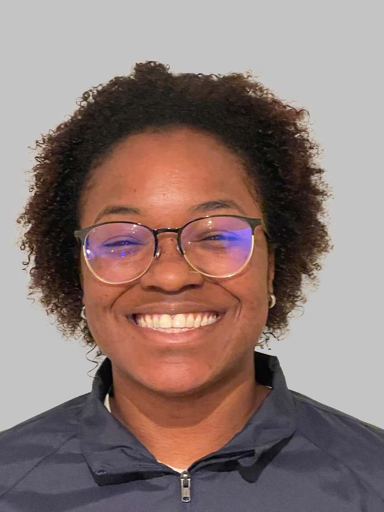

Aylynn Carter

Summary
Detail-oriented trust & safety and customer support professional with experience in content moderation,
fraud detection, and multi-channel customer service. Proven ability to assess risk, enforce platform
policies, and protect user safety in high-profile digital environments. Skilled in email, chat, and phone
support; escalation handling; and accurate documentation under strict quality and time-sensitive
standards. Known for cross-functional collaboration and driving process and customer experience
improvements.
Education
- Associate of the Arts, Computer Science - College of Southern Nevada (in progress)
- High School Diploma, Jazz Studies - Las Vegas Academy of the Arts (2014-2017)
Work Experience
- Content Moderator | Reflex Media, Las Vegas, NV 89120 - Jan. 2026 - Current
- Moderated user-generated content for a luxury dating platform using various ticketing systems,
enforcing Trust & Safety, community guidelines, and brand compliance.
- Conducted risk assessments on user profiles, images, and messages to identify policy violations,
explicit content, fraud, impersonation, and scams.
- Performed fraud detection and mitigation, including financial exploitation and account abuse
prevention.
- Delivered email-based customer support, resolving account, moderation, and safety issues while
maintaining high accuracy and quality metrics.
- Management Development Program (MDP) | CarMax, Henderson NV, 89014 - Mar 2025 - Nov 2025
- Designed and delivered cross-functional training to operations and internal teams, reinforcing
new technical and process updates via Microsoft Teams.
- Created onboarding materials, SOPs, and internal documentation that improved process adoption
and knowledge retention (utilized Photoshop and Canva).
- Analyzed customer journey metrics and internal QA insights to recommend improvements tied to
customer experience and operational performance.
- Partnered with leadership to align on process changes, resolve internal escalations, and ensure a
streamlined support experience.
- Chat Experience Consultant | CarMax, Henderson NV, 89014 - Nov 2021 - Nov 2025
- Managed high-volume digital customer interactions across web chat, phone, email, and internal
ticketing systems, consistently exceeding satisfaction and response-time standards.
- Handled escalated digital inquiries, including complex customer situations, cross-departmental
issues, and time-sensitive cases requiring rapid resolution.
- Collaborated with marketing, product, and platform partners to resolve communication gaps and
ensure consistent, brand-aligned customer messaging.
- Developed and maintained SOPs, internal content libraries, and process documentation to
improve team efficiency and reduce repeat inquiries.
- Coordinated with external partners (e.g., RepairPal) to streamline multi-channel support and
ensure customer follow-through.
- Geek Squad Consultant | Best Buy, Henderson NV, 89014 - Jul 2018 - Jul 2022
- Provided phone and in-person technical troubleshooting for a wide range of devices, improving
customer satisfaction and return visits.
- Mentored new team members on troubleshooting workflows, communication skills, and customer
engagement best practices.
- Managed service logistics, customer appointments, and technical support queues across multiple
channels.
Skills
| Multi-Channel Customer Support |
⭐️⭐️⭐️⭐️⭐️ |
| QA Evaluation & Chat Grading, Escalation & De-escalation Management |
⭐️⭐️⭐️ |
| Technical Troubleshooting (Hardware/Software / Platforms) |
⭐️⭐️⭐️ |
| CRM & Ticketing Systems (Salesforce, Zendesk, Freshdesk) |
⭐️⭐️⭐️⭐️ |
| Familiar with AI Tools (Cresta AI, AI Summarization, ChatGPT etc) |
⭐️⭐️⭐️⭐️ |
| Internal Knowledge Base / SOP Creation |
⭐️⭐️⭐️⭐️ |
Other